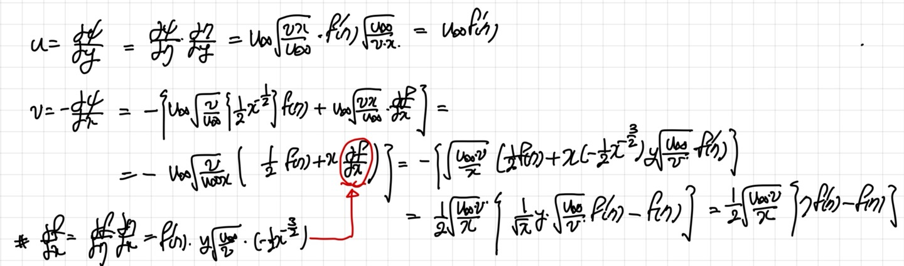

ch7에서 우리는 유체의 Boundary layer에 대해서 다루어 보았었다.
boundary layer을 간단하게 설명하자면,
어떤 유체가 고체면을 흐를때,
고체면과의 마찰력으로 인해, 고체와 유체가 만나는 면은 속도 = 0 이 된다.
(No slip condition)
하지만 유체는 점성을 가지고 있기때문에,
만나는 면의 속도감소가 그 위의 layer들의 속도감소에도
영향을 끼친다.
즉, 고체바닥에서 유체의 속도는 0 이고 위로 올라갈수록 조금씩 커지다가,
결국 Free sream velocity (U)와 같아지게 될것이다(벽면에 영향을 받지 않은 원래 유체속도).
그럴때, x방향 속도 u = 0.99U가 되는 벽면으로부터 거리를
Boundary layer thickness라고 정의한다.
아래 그림은 Laminar flowd의 Boundary layer을 보여주는 그림이다.
오른쪽으로 갈수록 점점 boundary layer가 두꺼워지는 것을 알 수있다.
![[Fluid Mechanics] Ch 7. Boundary layer Equation- Laminar, Blasius Equation.](./images/img-001.png)
그렇다면, 벽면을 따라 오른쪽을 x축이라고 설정하면,
x에따라서 정확히 두께가 어떻게 변하는지 식으로 풀 수 있을까??
이게 바로 유체역학의 꽃이다. 어떠한 자연현상을 수학식으로 표현하고,
해석하는것.
이번 포스터에서는 boundary layer thickness와 x와의 관계
Blasius Equation 을 증명해보고자 한다.
(주의할점, Laminar flat plate flow인 경우만)
시작은 Momentum Eq. (Navier's Stokes EQ)
![[Fluid Mechanics] Ch 7. Boundary layer Equation- Laminar, Blasius Equation.](./images/img-002.jpg)
Steady state, 2-D, No pressure gradient and gravity
그리고 shear은 y방향만 있다고 하자.
최종적으로 도출된 (1)식을 더 간단하게 표현하기 위해서, Stream function을 도입한다.
그리고, 새로운 변수(
η
)와 해당 변수로 구성된 함수( f(
η
))
를 Blasius는 다음과 같이 정의하였다.
![[Fluid Mechanics] Ch 7. Boundary layer Equation- Laminar, Blasius Equation.](./images/img-003.jpg)
이제 새롭게 정의한 함수를 그대로, (1)식에 대입 해 줄 것이다.
따라서, (1)식의 각항을 전부 f함수로 바꿔준다.

먼저, u,v를 위와 같이 바꿔주고,
미분 term들을 이어서 구해준다.
![[Fluid Mechanics] Ch 7. Boundary layer Equation- Laminar, Blasius Equation.](./images/img-005.jpg)
구해준 term들을 (1)식에 대입하게 되면, 최종적으로
Non-linear 3 order ODE가 나온다.
![[Fluid Mechanics] Ch 7. Boundary layer Equation- Laminar, Blasius Equation.](./images/img-006.jpg)
이제 이 공학수학문제를, Boundary condition과 함께 풀기위해서는 Numerical integral method가 필요하다.
자세한 과정은 ->
https://www.cfm.brown.edu/people/dobrush/am34/Mathematica/ch6/blasius.html
![[Fluid Mechanics] Ch 7. Boundary layer Equation- Laminar, Blasius Equation.](./images/img-007.jpg)
함수를 구한 결과를 정의한 변수
η
와 f'(
η
)= u/U를 Table에 plot하면 다음과 같다.
![[Fluid Mechanics] Ch 7. Boundary layer Equation- Laminar, Blasius Equation.](./images/img-008.png)
우리가 구하고 싶은 것은, Boundary layer thickness이다.
즉, u/U = 0.99 인 순간 두께(y)를 알고 싶은 것이다.
위 표를 보면, 그 순간
η=y[U/(vx)]^0.5 = 5.0 임을 알 수있다.
따라서,
![[Fluid Mechanics] Ch 7. Boundary layer Equation- Laminar, Blasius Equation.](./images/img-009.jpg)
Thickness 를 Delta로 표현하게 되면 최종적으로,
delta와 x의 관계식은 Reynolds수의 root에 반비례함을 알 수 있다.